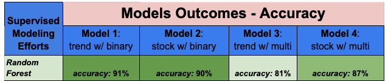

How did we build our model.
Logistic Regression
The highest accuracy score for the logistic regression model were 91% using binary outcomes with no stock data.
Before fitting the model, 'unnamed' columns, date columns, and rows with NaN field values were dropped. We also got rid of the Dow Jones data due to datatype issues with values showing up as strings.
The target variable was the binary class attribute that describes whether the number of deaths was higher or lower than the mean. The scikit-learn tool test_train_split was used to separate the data into training and testing data. Then the data was scaled using scikit-learn's StandardScaler before fitting the Logistic Regression model.
SVM
The highest accuracy score for the Support Vector Machine model was 91% using binary outcomes with stock data.
The setup was the same as that used for the logistic regression model up until the fitting of the SVM model.
Neural Networks
The highest accuracy score for the Neural Network model was 91% for binary outcomes without stock data.
Preprocessing was the same as that for the Logistic Regression and SVM models but also included one-hot encoding of the binary class target variable.
Model parameters were initialized with one layer, 50 nodes, and 100 epochs. Activation was ‘relu’ for the input layer and ‘sigmoid’ for the output layer.
Random Forest

Summary: It was surprising to get such a high degree of accuracy modeling against each of the 4 data sets.
However, the Random Forest Models that used the Trend Data with Binary outcomes and the Stock Data with the Multi-Class outcomes out performed their contemporary modeling efforts.
Model 1 Approach- Used the Google Trend data with Binary outcomes is split into a standard 80/20 test/train split with a random state of 42.
The model itself uses a random state of 1 with 500 estimators and yielded a Testing score of 0.9086.
Model 1 Findings- One of the most interesting findings and that ultimately turned out to be a consistently important attribute for all the Random Forest Models was the daily data for the Current[ly] Hospitalized COVID-19 Patients.
Interestingly enough the second most important feature & also a consistent data feature was from the Google Trend data, “can dogs get covid”.
The other top 10 features were from the Google Trend data set (lake, city, peloton, how to get my taste back, covid symptoms, ivermectin, stroke, flu symptoms).
The least important features were also from the Google Trend data (stimmy, doritos locos tacos, biden, baconator).
Model 2 Approach- Used the Google Trend data with Binary outcomes is split into a standard 80/20 test/train split with a random state of 42.
Standard Scaling is also applied due to the larger number included in the Stocks Data Set. The model itself uses a random state of 1 with 500 estimators and yielded a Testing score of 0.876.
Model 2 Findings- One of the most interesting findings is that the Current[ly] Hospitalized COVID-19 Patients was again the most important feature . The second most important feature is “covid symptoms”.
Top 10 features were from the Google Trend data set: can dogs get covid, lake, quarantine, stimulus, lungs. Top 10 features from the Stock Data Set are the Open & Close Price for Moderna Inc (MRNA).
Rounding out the top ten features is the Total Doses Administered. The least important features were also from the Google Trend data (anti-depressant, anxiety, biden, gig economy).

{kind=link}
{kind=link}
{kind=link}
{kind=link}
{kind=link}
{kind=link}
{kind=link}